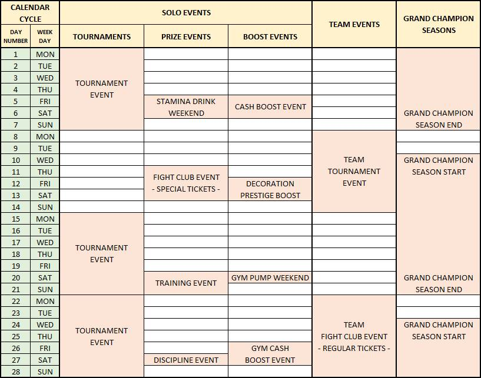

Explore various guides to enhance your gameplay.
Punch
60 → Hook
150 → Cross
220 → Clinch hook
420 → Side mount retaliate punch
700 → Full guard back punch
860 → Uppercut
1220 → Overhand punch
1430 → Clinch uppercut
1880 → Top mount retaliate punch
2120 → Power punch
2380 → Superman punch
Elbow
1450 → Muaythai clinch elbow
Knee
450 → Muaythai clinch knee
950 → Aggressive knee
Low kick
150 → Front kick
300 → Push kick
600 → Taekwondo defensive low kick
1100 → Muaythai leg kick
1700 → Taekwondo side kick
High kick
150 → High kick
300 → Roundhouse kick
600 → Capoeira spinning mid kick
1100 → Muaythai axe kick
1700 → Taekwondo bolley high kick
Takedown
200 → Throw
500 → Single-leg takedown
1200 → Whizzer throw
Submission
500 → Kimura
Ground Grappling
1000 → Ground sweep reverse
1500 → Great reversal
Credit To @Wann
Credit To @Slim
FARMING CASH AND PRESTIGE
The easiest way to farm Cash and prestige is to finish the campaign and watch ads after you beat your opponent in each stage. Maybe a little boring. But believe me, this will really help us to get Cash and prestige quickly.
Farming scrolls
There are 2 ways to get scrolls for free:
And not just get the scrolls. You will get Cash and common talent coins (which work to unlock common talents). I suggest using your fighter with full skills and Base points at each level (to have a higher chance to win the fight club).
Credit To @Wann
☆ Each player gets 2 tickets every week (Monday at 00:00 UTC+0)
☆ The registration time lasts for 24 hours since registration is open.
☆ Lv5 is the minimum fighter's level to register for a tournament.
☆ In 1 tournament bracket, there are 32 fighters.
☆ Fighters registered in the tournament cannot be trained. But your fighter will get bonus skill points when they go home.
☆ Tournament rewards that are unclaimed at the end of the week get discarded.
NOTE:
☆ It is very important to increase your Base skill (strength, condition, agility). Every time you increase your level, you must immediately max your Base skill. Otherwise, your fighter will be difficult to win the fight.
Credit To @Wann
You can always come up with your own build; those are for learning purposes and from a player’s point of view.
1) Clinchers:
☆ Strong points:
☆ Weak points:
2) Wrestlers:
☆ Strong points:
☆ Weak points:
3) Boxers:
☆ Strong points:
☆ Weak points:
4) Kickers:
☆ Strong points:
☆ Weak points:
5) Kickboxers:
☆ Strong points:
☆ Weak points:
There are 10 disciplines in this game. Each discipline has a different passive. Use discipline with a passive that is useful for your fighter. You can unlock disciplines by reaching Chapter 20 in the Manager Journey.
Example:
Each fighter can use 2 discipline cards. So choose the right one...
The discipline effect is only activated when the discipline card reaches level 3. Then each successive level increases the effect.
Higher stats for legendary cards.
Credit To @Slim
This is the cycle that all events happen in. The cycle is 4 weeks long and then it repeat itself after the cycle is finished.
Credit to The Underdogs.